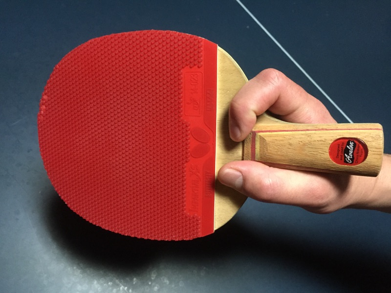

ラケットの種類

ラケットの種類はペンとシェイクの二種類で、左から二つがペンラケット、一番右がシェイクラケットです。 左のペンラケットは軽いので、ボールに細かく回転をかけることができます。 真ん中のラケットもペンラケットですが、こちらは両面使うことができ、上手く使えるようになるとものすごく強くなれます。 一番右のシェイクラケットは、初心者から上級者まで幅広い人たちに使われています。 裏面を使ってボールを上手く打てるようになると、戦略の幅が大きく広がります。
ラケットの大きさには決まりがないので、とても大きいラケットを使うことも可能です。